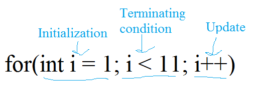

Lesson 6: Loops
Loops are used for repetitive actions that we don't want to have to code over and over again. If you want you program to count to 100 for example, a loop would be a good way to do that.
There are three different kinds of loops. We will be going over all three and explaining in which cirumstances each works the best.
While loops
A while loop has this structure:
while(some condition)
{
statements to execute
}
As with the ifs and elses, you leave out the curly braces if there is only one line of code in the while loop.
Also, very important, you are going to want something in the while loop that will cause the condition to evaluate to false. Otherwise, the program will never leave the loop, and you will have an infinite loop on your hands.
Here is a simple program that counts to 100:
I start out by initializing the counter to 1. The execution of the program will stay inside of the while loop as long as the while condition is true. In this case the while condition is num < 101. As soon as the num reaches 101, the loop will not be executed anymore. The result is that all the positive integers from 1 to 100 are printed.
As an experiment, what would happen if you were to change the initial value of num to 101? Try it out and see.
Well, nothing happened. That is because the statements inside of the while loop will only get executed if the while condition is true.
Do while loops
A do while loop has the main difference of guaranteeing that the statements inside the body of the loop will be executed at least once.
The basic structure is as follows:
do
{
statements
statements
statements
} while(condition);
As I said before, the statements inside a do while loop will execute at least once. To get an idea for why that might be useful, check out this modified version of the virtual casino program from the previous lesson:
The entire body of the menu is enclosed in a do while loop. This is so that the menu will always show at least once. If the user enters a value that is not on the menu, they will get an error message, and the menu will be shown again. This gives the user another chance to get it right.
For loops
For loops are very common in programming languages, and they generally follow the same basic structure. In C++, the syntax is a little bit weird. So I am going to go ahead and show you a very simple example. This program will count to 10.
Let's look at the for loop carefully:
So what is actually happening then? Basically, a variable named i is getting initialized to 1. The number is gets incremented by 1 every time the loop iterates. The loop will stop when the variable i is no longer less than 11, meaning it will stop when i is equal to 11.
I believe in learning by example, so here is another example. This program will show all the even numbers from 1 to 100.
Hopefully, it is at least somewhat clear by now. For loops will be particularly useful in next lesson.
One last thing I want to talk about before I go. If you create a variable inside of a loop, it will not be accessible outside of the loop. Run this program to see for yourself.
But there is just one problem, the program won't run at all. This is because the variable lookAtMe was declared inside of the loop, but is trying to be accessed from outside of the loop. This just doesn't work. This is because the scope of the variable is confined to the body of the loop. Now what happens if you create a variable inside of the loop with the same name as the one outside of the loop. Basically, all that happens is that the variable inside the loop is treated as if it were its own thing. Run the code below and see.
The value of lookAtMe was still 10, even though the loop was trying to change the value to 0.
Anyway, I just wanted to introduce you to the idea of scope. We'll get more into it in later lessons, but it is a very important idea in programming.
It's exercise time!
Exercise 1: Counting
Use a for loop to count from 1 to a user specified value. If the number is less than 1, count backwards.
Exercise 2: Counting by threes
Modify the previous exercise to count by threes.
Exercise 3: Fizz buzz
Fizz buzz, I have heard, is a common question asked by job interviewers so that they can tell if you are a real programmer or not. It should be simple enough given what you know already.
Here's how it works. Count from 1 to 100. If a number is divisible by 3, print "fizz" instead of the number. If the number is divisible by 5, print "buzz" next to the number. If the number is divisible by both 3 and 5, print fizz buzz instead of the number.
Your output should look something like this:
1
2
fizz
4
buzz
.
.
.
13
14
fizz buzz
Hint: use the modulo operator. If x is divisible by y, that means that x % y = 0.
Exercise 4: Average and sum
The user will enter in a series of values. The value -1 will mean the user is finished. This may be done with either a do loop or a do while loop. The program will return the average and the sum.
Hint: Keep a running total. Update it every time the user enters a value. Don't include -1 in your calculations.
Exercise 5: Min and max
Like exercise 4, but this time we'll find the min and the max.
Hint: Create variables named min and max. Set min equal to an absurdly huge number and max equal to an absurdly small number. If the user enters a number less than the min, update the min. If a number is greater than the max, update the max.